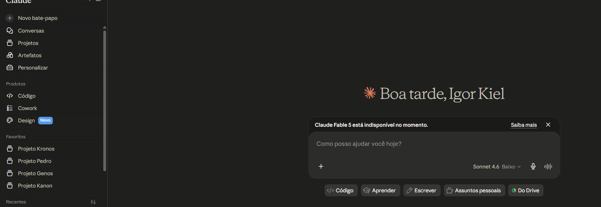
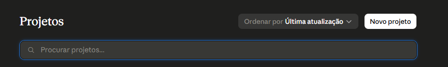
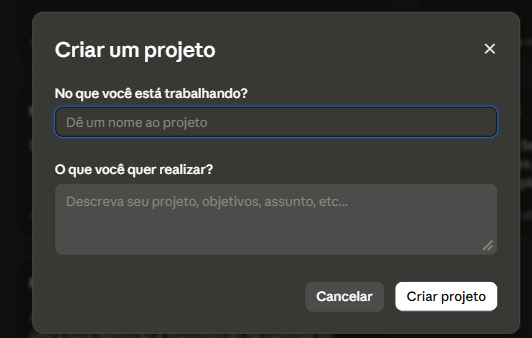
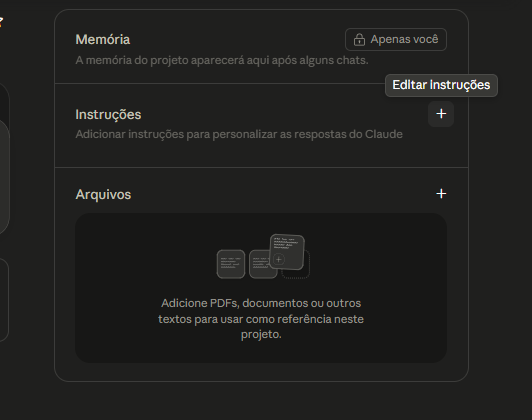
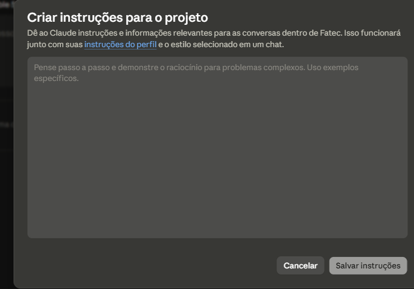
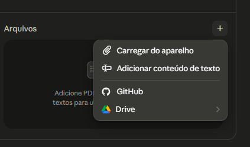

Um Projeto é um espaço separado dentro do Claude onde você define como ele deve se comportar. Diferente de uma conversa comum, o Projeto guarda instruções fixas e arquivos de referência que valem para todas as conversas dentro dele.
Acesse pelo menu lateral em Projetos.

Passo a passo
1
No menu lateral, clique em Projetos.2
Clique em Novo projeto no canto superior direito.
3
Dê um nome ao projeto — algo que identifique o contexto.4
Descreva o que você quer realizar nesse projeto.5
Clique em Criar projeto.
Dentro do projeto você verá três seções: Memória (gerada automaticamente pelo Claude), Instruções e Arquivos.

1
Clique no + ao lado de Instruções.2
Escreva como o Claude deve se comportar nesse projeto — tom, foco, o que deve e o que não deve fazer.3
Clique em Salvar instruções. Essas regras valem para todas as conversas dentro do projeto.Exemplo de instrução: "Você é um assistente de Eletrotécnica. Responda sempre em português. Mostre o desenvolvimento passo a passo. Não dê a resposta direta — guie o aluno até ela."
A instrução do projeto diz ao Claude quem ele é e o que pode e não pode fazer. Quanto mais específica, menos improviso — e menos erro.
O que incluir
- Papel — quem o Claude é nesse contexto (ex: "assistente especializado em [tema]")
- Idioma e tom — sempre em português, linguagem técnica ou simples
- O que fazer — ser direto, citar a fonte, dar exemplos quando possível
- O que não fazer — não sair do tema definido, não inventar quando não sabe
Exemplos
✗
"Seja um assistente." — vago demais, Claude vai improvisar tudo que falta.
✓
"Você é um assistente especializado em [tema]. Responda sempre em português. Seja direto e objetivo. Quando não tiver certeza, diga que não sabe — não invente."
Dica: teste o projeto com uma pergunta real antes de usar. Se a resposta não for o que você esperava, ajuste as instruções.

Clique no + ao lado de Arquivos para adicionar documentos que o Claude usará como referência em todas as conversas do projeto.
- Carregar do aparelho — PDF, Word, imagem ou texto do seu computador
- Adicionar conteúdo de texto — cole o texto diretamente
- Drive — arquivo do Google Drive
Uso prático: suba a ementa, a lista de exercícios ou as normas da disciplina. O Claude passa a responder com base nesses documentos em todas as conversas do projeto.